타임스탬프: 20260514_001312 | 세션: P2.17.1.0 | 작성: Claude (자동) — 사용자 명시 사양
대상 독자: 이 시스템을 전혀 모르는 사람도 따라할 수 있도록
본 튜토리얼은 한 시뮬레이션 작업(Cs-137 1 Ci, 5mm Pb 차폐, 1m water 검출기)을 두 가지 방법으로 수행하는 과정을 시각 증거 + 단계별 캡쳐 + 복사 가능 코드로 시연합니다:
그리고 둘 사이의 가교: 우리 GUI에서 입력한 조건으로 전통적 GEANT4 application cc 파일을 자동 출력하는 기능 (GUI #3 cc export, Ctrl+E).
신규 사용자는 이 섹션부터 시작. 이미 GEANT4 환경 있는 분은 §1로 건너뛰세요.
| 항목 | 요구사항 | 본 튜토리얼 기준 |
|---|---|---|
| OS | macOS 11+ (Apple Silicon) / Linux Ubuntu 22.04+ / Windows WSL2 | macOS Apple M5, 32GB RAM |
| GEANT4 | 11.x (11.1.2 권장) | 11.1.2 (geant4-11-01-patch-02) |
| Qt | 5.15+ (Qt5) | Qt 5.15.18 via brew |
| CMake | 3.16+ | 3.31.x |
| 컴파일러 | clang++ 또는 g++ C++17 | Apple clang 15+ |
| Python (선택) | 3.10+ (스크립트용) | 3.11 |
brew install geant4 # 또는 cask 버전: # brew install --cask geant4 # 설치 확인 which geant4-config geant4-config --version # 기대 출력: 11.1.x
# 1. Source 다운로드 + 압축 해제
mkdir -p ~/geant4 && cd ~/geant4
curl -O https://geant4-data.web.cern.ch/releases/geant4-v11.1.2.tar.gz
tar xzf geant4-v11.1.2.tar.gz
cd geant4-v11.1.2
# 2. CMake 설정 (Qt + visualization 활성)
mkdir build && cd build
cmake -DCMAKE_INSTALL_PREFIX=$HOME/geant4/install \
-DGEANT4_INSTALL_DATA=ON \
-DGEANT4_USE_QT=ON \
-DGEANT4_USE_OPENGL_X11=OFF \
-DGEANT4_USE_RAYTRACER_X11=OFF \
..
# 3. 빌드 (소요 시간: 30분~1시간, Apple M5 기준)
make -j$(sysctl -n hw.ncpu)
make install
# 4. 환경 변수 활성화 (매 shell 세션 또는 .zshrc에 추가)
source $HOME/geant4/install/bin/geant4.sh
which geant4-config
geant4-config --version
brew install qt@5 brew link qt@5 --force ls /opt/homebrew/opt/qt@5/lib # Qt frameworks 확인
cat >> ~/.zshrc <<'EOF'
# GEANT4 환경 (P2 튜토리얼)
if [ -f "$HOME/geant4/install/bin/geant4.sh" ]; then
source "$HOME/geant4/install/bin/geant4.sh"
fi
# Qt5 PATH
export PATH="/opt/homebrew/opt/qt@5/bin:$PATH"
EOF
source ~/.zshrc
which geant4-config && geant4-config --version which qmake && qmake -v which cmake && cmake --version
위 3개 명령 모두 정상 출력되면 §1로 진행. 실제 출력 예시:
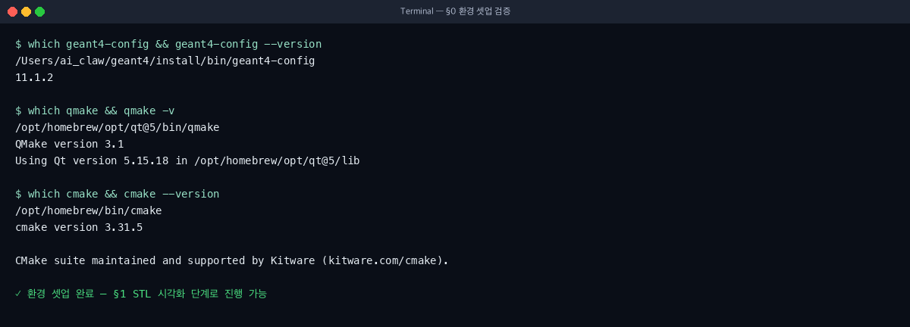
STL = STereoLithography 3D 모델 파일. 차폐체/검출기 형상을 GEANT4에 입력하는 표준 방식.
STL 파일은 3D 모델을 삼각형 면(facet) 모음으로 표현하는 형식:
data/stl/ 디렉토리에 미리 생성되어 있습니다. 생성 스크립트:
cd "/Users/jyc/Library/Mobile Documents/com~apple~CloudDocs/GEANT4_claude" ls data/stl/ # 새 박스/원통 생성 (필요 시): python3 scripts/generate_test_box_stl.py --x_mm 50 --y_mm 50 --z_mm 5 --name test_Pb_50x50x5mm python3 scripts/generate_test_cylinder_stl.py --r_mm 8 --h_mm 30 --name test_capsule_R8H30mm
| 파일 | 크기 (bbox mm) | 용도 | 재료 (시뮬 시) |
|---|---|---|---|
test_Pb_50x50x5mm.stl | 50 × 50 × 5 | 5mm Pb 슬랩 차폐 (시나리오 1) | G4_Pb (납) |
test_Pb_50x50x50mm.stl | 50 × 50 × 50 | 5cm Pb 큰 박스 (검증 영역 B-5) | G4_Pb |
test_Pb_100x100x100mm.stl | 100 × 100 × 100 | 10cm Pb 두꺼운 차폐 (시나리오 3) | G4_Pb |
test_water_20x20x10mm.stl | 20 × 20 × 10 | 작은 water 검출기 | G4_WATER |
test_water_50x50x10mm.stl | 50 × 50 × 10 | 5×5×1cm water 검출기 (시나리오 1) | G4_WATER |
test_water_100x100x10mm.stl | 100 × 100 × 10 | 큰 water 검출기 (시나리오 2) | G4_WATER |
test_capsule_Steel_R8H30mm.stl | Ø16 × 30 | Steel 캡슐 (Co-60 산업 모사, 시나리오 2) | G4_Fe (대용) |
test_capsule_Pb_R20H80mm.stl | Ø40 × 80 | Pb 캡슐 (대형 차폐) | G4_Pb |
test_cube_10mm.stl | 10 × 10 × 10 | 1cm 기준 큐브 (단위 검증) | — |
아래 그림들은 Python (numpy-stl + matplotlib)으로 자동 렌더링됨. 좌표축은 모두 mm 단위.
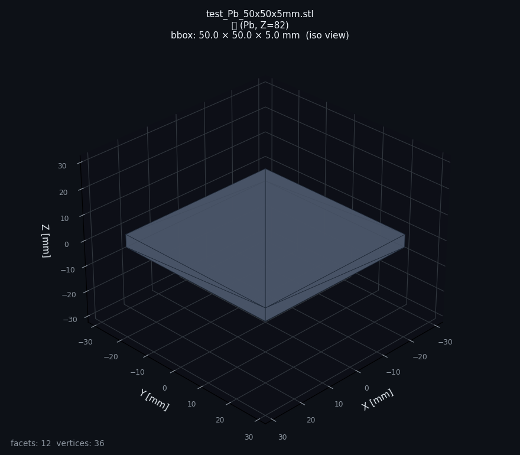
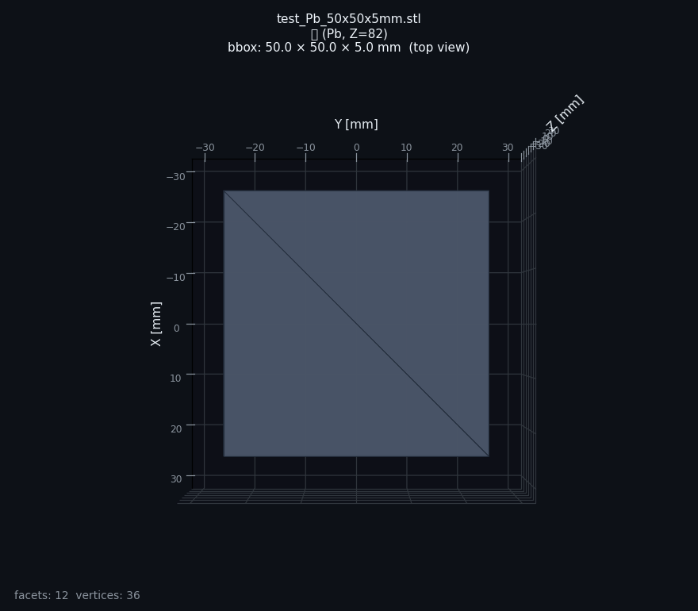
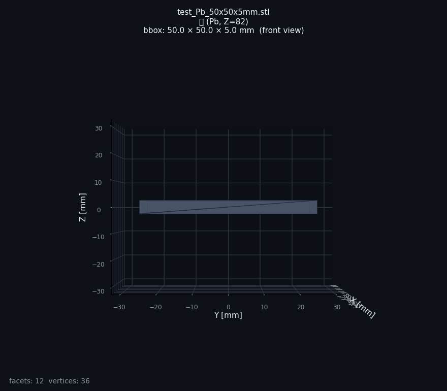
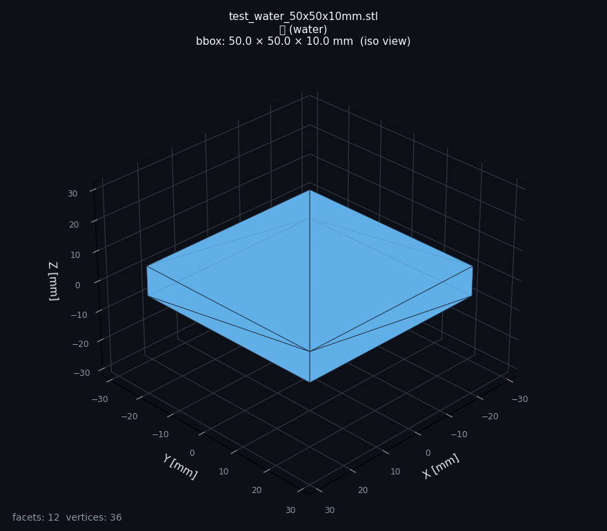
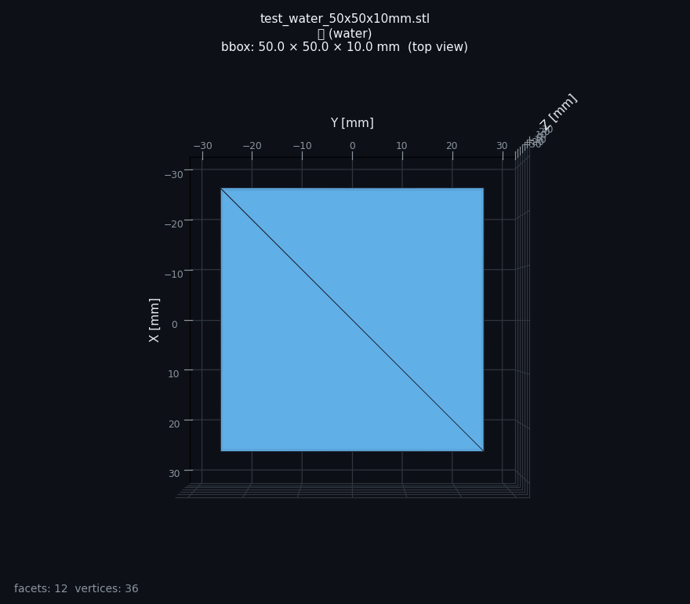
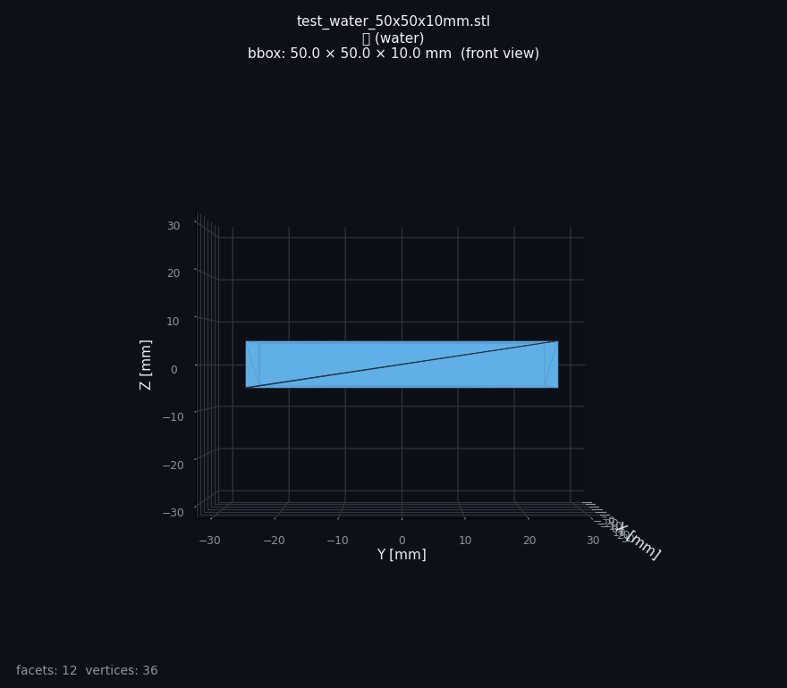
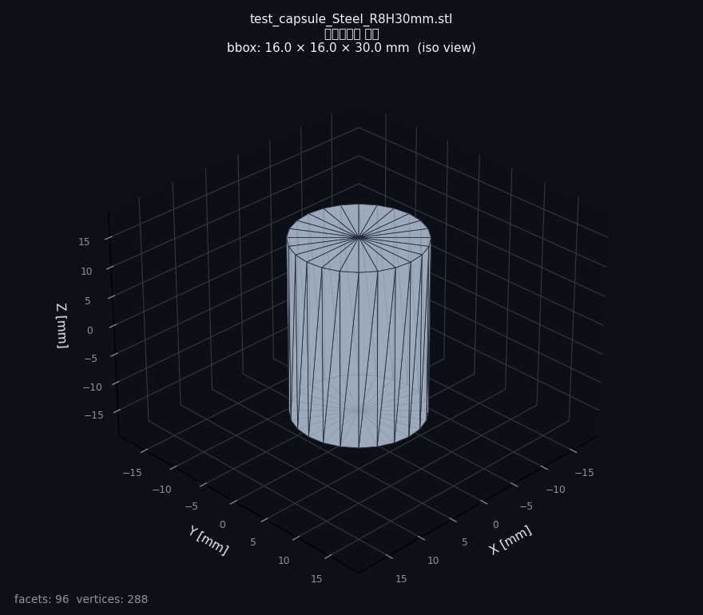
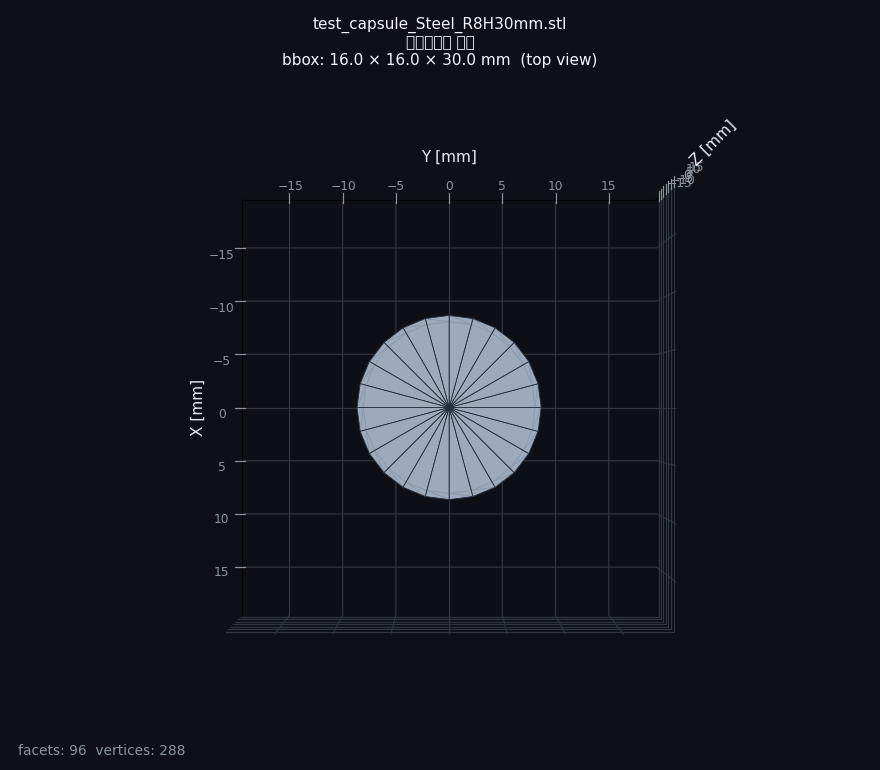
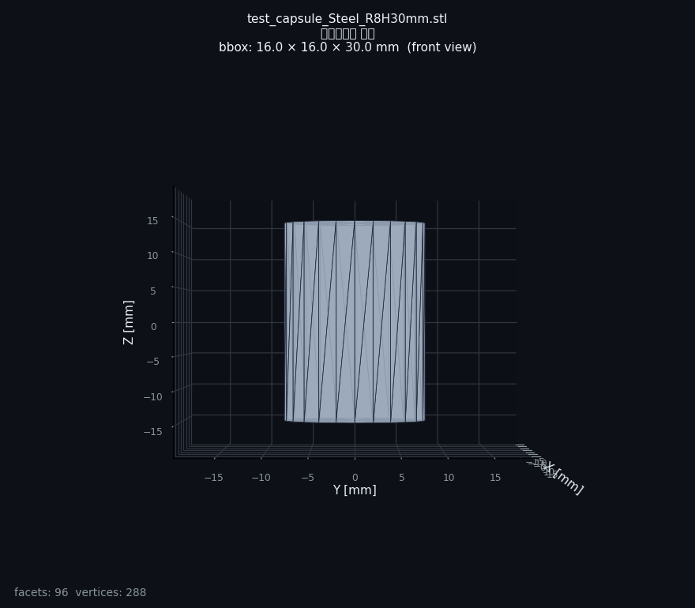
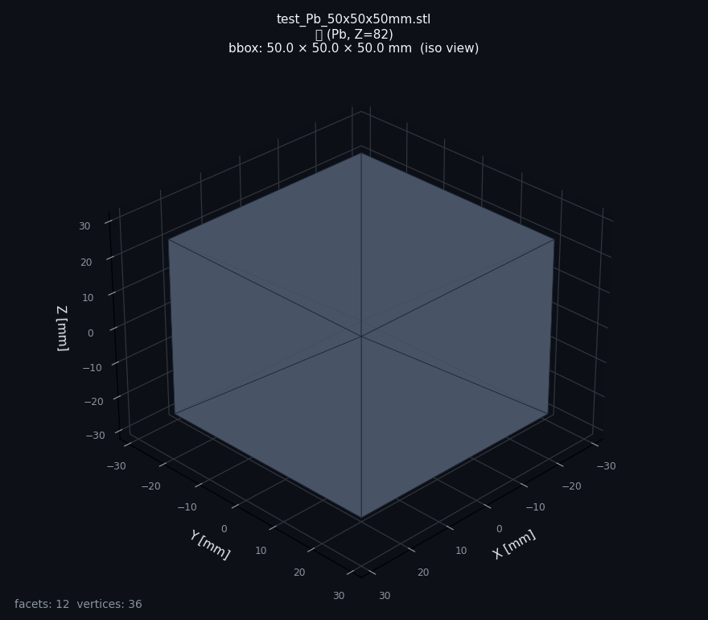
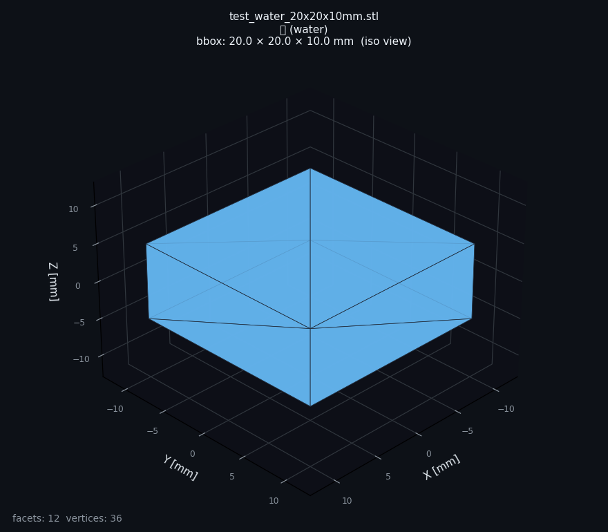
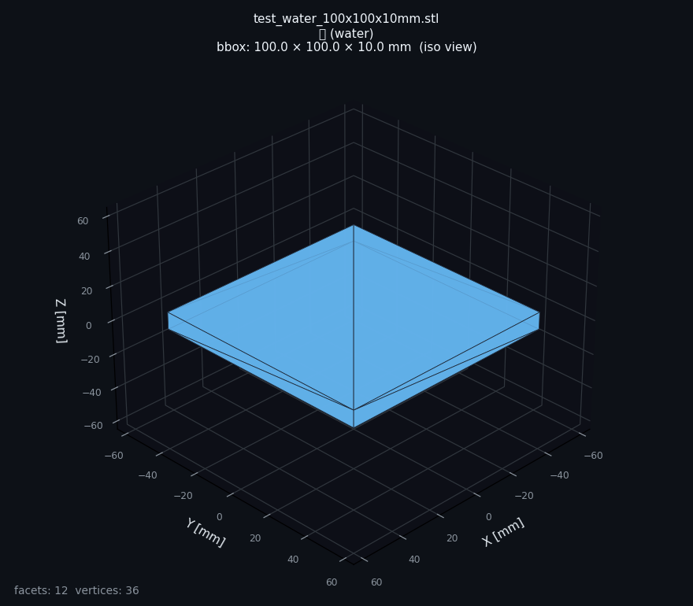
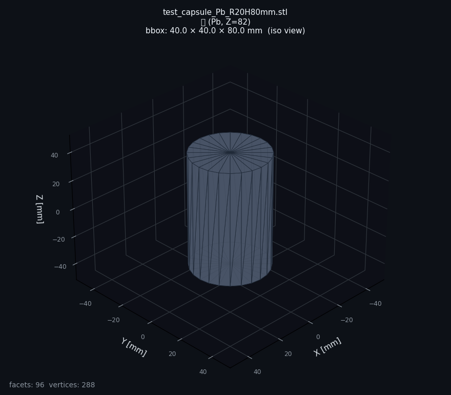
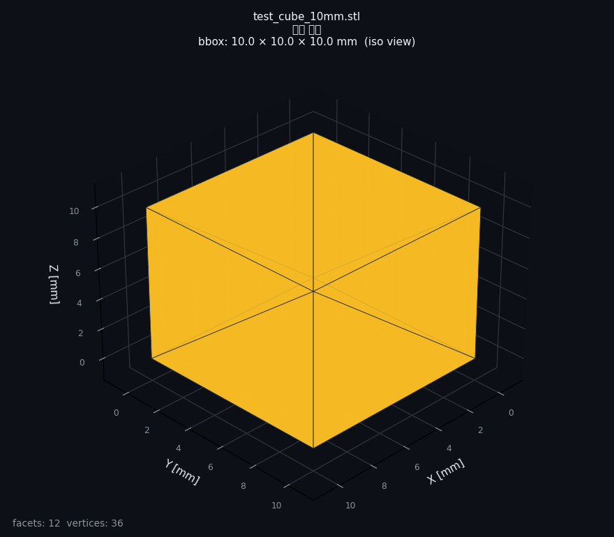
본 튜토리얼이 다루는 표준 시뮬 배치:
우리가 개발 중인 Qt5 native GUI. GEANT4의 기존 vis manager와는 다른 별도 앱입니다.
# 방법 A: 빌드 디렉토리에서 직접 실행 (권장 — working dir 자동) cd "/Users/jyc/Library/Mobile Documents/com~apple~CloudDocs/GEANT4_claude" ./ShieldDose_GUI_v3/build/ShieldDose_GUI # 방법 B: .app 번들 (Finder에서 더블클릭 가능) open ~/Applications/ShieldDose_GUI.app # 방법 C: 다른 working dir에서 실행 시 데이터 디렉토리 명시 DATADIR="/Users/jyc/Library/Mobile Documents/com~apple~CloudDocs/GEANT4_claude/macros/sources" ShieldDose_GUI --data-dir "$DATADIR"
실행 시 터미널 출력 (신뢰 기관 데이터 로드 확인):
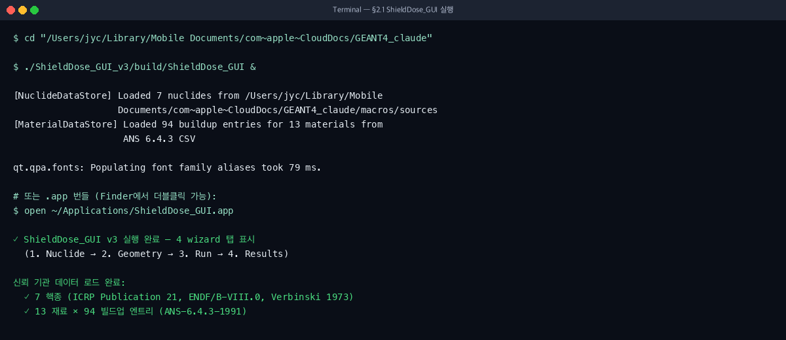
GUI가 실행되면 다음 화면이 나타납니다 (본 작업에서 실제 실행 + 캡쳐):

현재 캡쳐는 Cf-252 핵종 선택 상태 (Source: ENDF/B-VIII.0 + Verbinski 1973). Cs-137 선택 시 Source 박스에 "ICRP Publication 21" 표시됨.
[NuclideDataStore] Loaded 7 nuclides + [MaterialDataStore] Loaded 94 buildup entries for 13 materials from ANS 6.4.3 CSV — 핵종 + 재료 데이터 로드 완료ShieldDose_GUI는 다음 신뢰 기관 데이터를 내장:
| 데이터 카테고리 | 출처 | 코드 위치 | GUI 표시 |
|---|---|---|---|
| 핵종 감마상수 (Cs-137, Co-60, Ir-192 등 7개) | ICRP Publication 21, ENDF/B-VIII.0, Smith & Stabin 2012 | ShieldDose_GUI_v3/core/NuclideDataStore.cc | Nuclide 패널 → "Gamma Constant: 값 [Ref: 출처]" |
| 핵종 spectrum (energy + intensity) | ENDF/B-VIII.0 RaD parameters, Verbinski 1973 (Cf-252 prompt gamma) | NuclideDataStore | "Source: ENDF/B-VIII.0 ..." |
| 재료 빌드업 팩터 | ANS-6.4.3-1991, NCRP Report 49 | MaterialDataStore.cc + data/buildup_ans643.csv | Materials Browse → 출처 표시 |
| 재료 감쇠계수 μ/ρ, μ_en/ρ | NIST XCOM SRD 126 | MaterialDataStore | 해석적 투과 계산 + 재료 정보 |
| H*(10) 환산 계수 | ICRP-74 | Run 시뮬 자동 적용 | Results "H*(10): X μSv/h" |
| Cf-252 중성자/감마 멀티플리시티 | NIST SRD, NCRP Report 38 | NuclideDataStore | "GPS Mode: Multiple Vertex (cascade)" |
Nuclide 콤보박스 → Cs-137 선택. 자동으로 데이터 로드 + 표시:
0.330 R·m²/(Ci·h) [Ref: ICRP Publication 21]30.04 y0.851ENDF/B-VIII.0 (RaD parameters)Activity 필드 → 37000 MBq (= 1 Ci = 3.7×10¹⁰ Bq) 입력. 또는 단위 콤보로 Ci 선택 후 1 입력.
하단 Next: Geometry Setup ▶ 버튼 클릭.
Mode 콤보 → Slab(슬랩, 간단 박스) 또는 STL Import (Onshape)(STL 파일 임포트) 선택.
본 튜토리얼은 Slab 모드를 기본으로 사용 (시나리오 1). STL 모드 사용법은 §1 STL 파일 시각화 + §2.6 참고.
G4_Pb (NIST 사전 정의 재료)0.5 cm (5mm)10 cm (선원에서 10cm 떨어진 위치)G4_WATER5 / 5 / 1 cm (5×5×1cm)0 / 0 / 100 cm (1m 거리)STL 모드 페이지 → Shield STL 그룹 → Browse... → data/stl/test_Pb_50x50x5mm.stl 선택.
InspectMesh 자동 호출 → 라벨에 다음 표시:
Position X/Y/Z: 0 / 0 / 10 cm. ISS-087 fix 후 cm 라벨 자동
Material Browse → G4_Pb. Detector STL = test_water_50x50x10mm.stl, position (0,0,100) cm, G4_WATER.
1000000 (1M)scripts/check_macro_pit.py):
~17.5 μSv/h~2,098 μSv/h (slab 검출기 기준)~39% (1M events; 정밀 측정엔 50M+ 필요)하단에 두 버튼:
또한 Export HTML / Export PDF 버튼으로 보고서 출력.
Nuclide 패널에서 핵종 선택 시 다음 항목이 자동 표시됩니다 (코드 위치: ShieldDose_GUI_v3/widgets/NuclidePanel.cc:121-140):
// NuclidePanel::updateInfoDisplay() — 핵종 선택 시 자동 호출
QString gcText = "Gamma Constant: ";
gcText += QString::number(nuc.gammaConstant_R_m2_Ci_h, 'f', 3) + " R·m²/(Ci·h)";
auto* trusted = NuclideDataStore::GetTrustedGammaConstant(name);
if (trusted) {
gcText += " [Ref: " + trusted->source + "]";
// 예: "[Ref: ICRP Publication 21]"
}
info += "Half-life: " + nuc.halflife + "
";
info += "Gammas/decay: " + ... + "
";
info += "Source: " + nuc.source;
// 예: "Source: ENDF/B-VIII.0 (RaD parameters), Verbinski 1973 (prompt gamma)"
우리 GUI의 핵심 혁신 #3. 사용자가 GUI에서 입력한 시뮬 조건을 표준 GEANT4 application 소스 패키지로 자동 변환.
일반 GEANT4 사용자는 시뮬을 위해 cc 파일을 직접 작성해야 합니다:
DetectorConstruction.cc — 차폐/검출기 형상 정의PrimaryGeneratorAction.cc — 핵종/광원 정의main.cc — application 진입점CMakeLists.txt — 빌드 설정run.mac — 실행 매크로각 파일 작성에 수 시간~수 일 소요. 우리 GUI는 클릭 한 번으로 이 모든 파일을 자동 생성합니다.
§2의 1~7 단계를 마치고 Run 패널까지 도달.
메뉴바: File → Export GEANT4 Application (.cc)... 클릭. 또는 단축키 Ctrl + E (macOS: ⌘ + E).
QFileDialog 열림 → 원하는 폴더 선택 (예: ~/developer/shielddose_export/).
# 또는 미리 폴더 생성 mkdir -p ~/developer/shielddose_export
다음 안내 다이얼로그 표시:
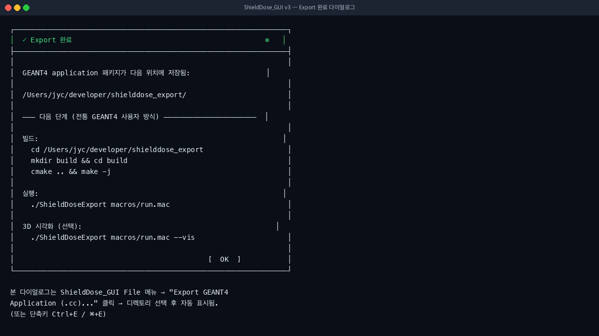
cd ~/developer/shielddose_export ls -R tree .
실제 출력 (본 작업에서 CcExporter 실행 후 캡쳐):
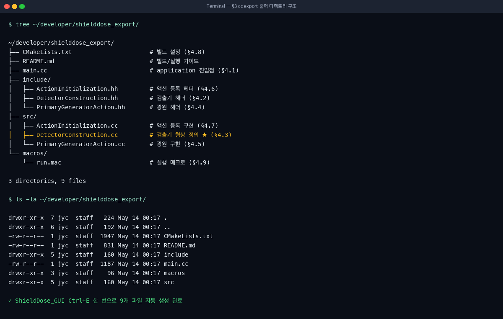
ShieldDose_GUI_v3/core/CcExporter.cc에서 SimConfig (GUI 입력값) → 8 개 메서드 호출 → 각 파일 본문 생성:
// CcExporter.cc — 핵심 메서드
class CcExporter {
public:
static bool ExportPackage(const SimConfig& config,
const std::string& outputDir,
std::string& errorOut) {
// 1. 디렉토리 생성
fs::create_directories(outputDir + "/include");
fs::create_directories(outputDir + "/src");
fs::create_directories(outputDir + "/macros");
// 2. 각 파일 생성 (SimConfig 값 주입)
WriteFile(outputDir + "/CMakeLists.txt", GenerateCMakeLists(config));
WriteFile(outputDir + "/main.cc", GenerateMainCc(config));
WriteFile(outputDir + "/include/DetectorConstruction.hh", GenerateDetectorConstructionHh(config));
WriteFile(outputDir + "/src/DetectorConstruction.cc", GenerateDetectorConstructionCc(config));
// ... PrimaryGenerator, ActionInit, macros/run.mac, README.md
}
};
아래 모든 코드는 GUI Ctrl+E로 실제 생성된 본문 그대로. 각 줄에 한국어 설명 추가.
GEANT4 시뮬레이션을 시작하는 메인 프로그램. 두뇌(RunManager) + 검출기 + 물리 모델 + 광원 액션 모두 등록하고 실행.
/// \file main.cc
/// \brief Auto-generated GEANT4 application entry (from ShieldDose GUI v3)
// ─── 1) GEANT4 핵심 헤더 ───
#include "G4RunManagerFactory.hh" // 시뮬 전체를 관리하는 두뇌 (RunManager) 생성기
#include "G4UImanager.hh" // 사용자 명령 (/run/beamOn 등) 입력 매니저
#include "G4VisExecutive.hh" // 시각화 매니저 (3D 화면 표시)
#include "G4UIExecutive.hh" // 인터랙티브 UI (Qt 콘솔)
#include "FTFP_BERT.hh" // 표준 물리 모델 패키지 (전자기 + 강한 상호작용)
// ─── 2) 우리가 작성한 클래스 헤더 ───
#include "DetectorConstruction.hh" // 차폐 + 검출기 형상 정의 (§4.3)
#include "ActionInitialization.hh" // 광원 + 이벤트 액션 등록 (§4.7)
int main(int argc, char** argv) {
// ─── 3) 시뮬 두뇌 생성 ───
// G4RunManagerFactory: GEANT4의 핵심 객체. 시뮬 전체를 통제
auto* runManager = G4RunManagerFactory::CreateRunManager(G4RunManagerType::Default);
// ─── 4) 검출기/물리/액션 등록 (순서 중요) ───
runManager->SetUserInitialization(new DetectorConstruction()); // 차폐+검출기 형상
runManager->SetUserInitialization(new FTFP_BERT); // 물리 모델 (감마/전자/중성자 등)
runManager->SetUserInitialization(new ActionInitialization()); // 광원 및 액션
// ─── 5) 초기화 — 위 등록된 것들로 시뮬 환경 구축 ───
runManager->Initialize();
// ─── 6) 시각화 매니저 ───
G4VisManager* visManager = new G4VisExecutive;
visManager->Initialize();
G4UImanager* UImanager = G4UImanager::GetUIpointer();
// ─── 7) 모드 분기 ───
if (argc == 1) {
// 인자 없음 → 인터랙티브 모드 (사용자가 콘솔에 명령 입력)
G4UIExecutive* ui = new G4UIExecutive(argc, argv);
UImanager->ApplyCommand("/control/execute macros/run.mac"); // 기본 매크로 실행
ui->SessionStart(); // Qt UI 시작 — 사용자가 닫을 때까지 대기
delete ui;
} else {
// 인자 있음 → 배치 모드 (매크로 실행 후 자동 종료)
G4String command = "/control/execute ";
G4String fileName = argv[1]; // 첫 인자 = 매크로 파일 경로
UImanager->ApplyCommand(command + fileName);
}
// ─── 8) 정리 ───
delete visManager;
delete runManager;
return 0;
}
차폐/검출기 형상을 정의하는 클래스의 선언(헤더). 실제 구현은 §4.3.
#ifndef DetectorConstruction_hh
#define DetectorConstruction_hh
// G4VUserDetectorConstruction: GEANT4가 제공하는 추상 베이스 클래스.
// 우리는 이걸 상속받아 Construct() 메서드에 형상 정의 코드를 작성.
#include "G4VUserDetectorConstruction.hh"
#include "G4LogicalVolume.hh" // 논리 볼륨 (재료 + 형상)
class DetectorConstruction : public G4VUserDetectorConstruction {
public:
DetectorConstruction();
virtual ~DetectorConstruction() = default;
// Construct: World + Shield + Detector 형상 생성 후 World physical 반환
virtual G4VPhysicalVolume* Construct() override;
// ConstructSDandField: Sensitive Detector (dose scoring) 등록
virtual void ConstructSDandField() override;
private:
// Detector의 logical volume — Sensitive Detector 할당 시 사용
G4LogicalVolume* fDetectorLogical = nullptr;
};
#endif
실제 World + Pb 차폐 + water 검출기를 G4Box(직육면체) 형상으로 만들고 World에 배치. 이 파일이 GUI 입력값(Pb 5mm @ z=10cm, water 5×5×1cm @ z=100cm)을 코드로 표현한 것.
/// \file DetectorConstruction.cc
/// \brief Auto-generated from ShieldDose GUI v3 SimConfig
#include "DetectorConstruction.hh"
#include "G4NistManager.hh" // NIST 표준 재료 라이브러리 (G4_Pb, G4_WATER 등)
#include "G4Box.hh" // 직육면체 형상
#include "G4PVPlacement.hh" // 형상을 World에 배치
#include "G4SystemOfUnits.hh" // 단위 (cm, mm, MeV 등)
#include "G4MultiFunctionalDetector.hh" // 다중 측정 검출기 (dose, fluence 등)
#include "G4PSDoseDeposit.hh" // 선량 침적 측정 (J/kg = Gy)
#include "G4SDManager.hh" // Sensitive Detector 관리자
DetectorConstruction::DetectorConstruction() {}
G4VPhysicalVolume* DetectorConstruction::Construct() {
auto* nist = G4NistManager::Instance(); // NIST 재료 매니저 인스턴스
// ═══════════════════════════════════════════
// 1) World — 시뮬 공간 전체 (±5m air 박스)
// ═══════════════════════════════════════════
auto* worldMat = nist->FindOrBuildMaterial("G4_AIR");
// G4Box("이름", 반-x, 반-y, 반-z) ← 반-크기 사용 (관례)
auto* worldSolid = new G4Box("World", 5.0*m, 5.0*m, 5.0*m);
auto* worldLogical = new G4LogicalVolume(worldSolid, worldMat, "World");
auto* worldPhys = new G4PVPlacement(nullptr, // 회전 없음
G4ThreeVector(), // 원점 (0,0,0)
worldLogical,
"World",
nullptr, // mother = 없음 (최상위)
false, 0, true);
// ═══════════════════════════════════════════
// 2) Shield — 5mm Pb 슬랩 차폐 (GUI 입력값 자동 주입)
// ═══════════════════════════════════════════
auto* shieldMat = nist->FindOrBuildMaterial("G4_Pb"); // NIST 표준 납
// G4Box: 50×50×0.25 cm = 100×100×5 mm (full size)
// GUI 입력 Thickness 5mm → 반-z = 0.25 cm
auto* shieldSolid = new G4Box("Shield", 50*cm, 50*cm, 0.25*cm);
auto* shieldLogical = new G4LogicalVolume(shieldSolid, shieldMat, "Shield");
// Position z = 10 cm — 선원에서 10cm 떨어진 곳에 차폐 배치
new G4PVPlacement(nullptr,
G4ThreeVector(0, 0, 10*cm),
shieldLogical, "Shield", worldLogical,
false, 0, true);
// ═══════════════════════════════════════════
// 3) Detector — 5×5×1 cm water 검출기 (GUI 입력값)
// ═══════════════════════════════════════════
auto* detMat = nist->FindOrBuildMaterial("G4_WATER");
// G4Box: 2.5×2.5×0.5 cm = 5×5×1 cm (full size)
auto* detSolid = new G4Box("Detector", 2.5*cm, 2.5*cm, 0.5*cm);
fDetectorLogical = new G4LogicalVolume(detSolid, detMat, "Detector");
// Position z = 100 cm = 1m — 선원에서 1m 거리
new G4PVPlacement(nullptr,
G4ThreeVector(0*cm, 0*cm, 100*cm),
fDetectorLogical, "Detector", worldLogical,
false, 0, true);
return worldPhys;
}
// ═══════════════════════════════════════════
// Sensitive Detector — 검출기에서 dose 측정 활성화
// ═══════════════════════════════════════════
void DetectorConstruction::ConstructSDandField() {
// MultiFunctionalDetector: 여러 측정 항목 등록 가능
auto* mfd = new G4MultiFunctionalDetector("DetectorSD");
G4SDManager::GetSDMpointer()->AddNewDetector(mfd);
// G4PSDoseDeposit: dose = energy_deposit / mass [Gy = J/kg]
mfd->RegisterPrimitive(new G4PSDoseDeposit("Dose"));
// Detector 논리 볼륨에 SD 할당 → 모든 이벤트마다 dose 자동 계산
if (fDetectorLogical) SetSensitiveDetector("Detector", mfd);
}
#ifndef PrimaryGeneratorAction_hh
#define PrimaryGeneratorAction_hh
#include "G4VUserPrimaryGeneratorAction.hh" // 광원 액션 베이스 클래스
#include "G4GeneralParticleSource.hh" // GPS — 입자/에너지/위치/방향 표준 광원
class PrimaryGeneratorAction : public G4VUserPrimaryGeneratorAction {
public:
PrimaryGeneratorAction();
virtual ~PrimaryGeneratorAction();
// GeneratePrimaries: 매 이벤트마다 GPS로 1차 입자 생성
virtual void GeneratePrimaries(G4Event* event) override;
private:
G4GeneralParticleSource* fGPS = nullptr;
};
#endif
/// \file PrimaryGeneratorAction.cc
/// \brief Auto-generated — nuclide: Cs-137
#include "PrimaryGeneratorAction.hh"
PrimaryGeneratorAction::PrimaryGeneratorAction() {
fGPS = new G4GeneralParticleSource();
// 본 application은 macros/run.mac에서 /gps/ 명령으로 핵종 설정.
// 예: /gps/particle gamma
// /gps/energy 0.662 MeV
// /gps/pos/type Point
// /gps/pos/centre 0 0 0 cm
}
PrimaryGeneratorAction::~PrimaryGeneratorAction() { delete fGPS; }
// 매 이벤트마다 호출됨 — 1차 입자 1개(또는 cascade 시 여러 개) 생성
void PrimaryGeneratorAction::GeneratePrimaries(G4Event* event) {
fGPS->GeneratePrimaryVertex(event);
}
#ifndef ActionInitialization_hh
#define ActionInitialization_hh
#include "G4VUserActionInitialization.hh"
class ActionInitialization : public G4VUserActionInitialization {
public:
ActionInitialization() = default;
virtual ~ActionInitialization() = default;
// Build: 각 worker thread에서 호출되어 User Action들 등록
virtual void Build() const override;
};
#endif
/// \file ActionInitialization.cc
/// \brief Auto-generated
#include "ActionInitialization.hh"
#include "PrimaryGeneratorAction.hh"
void ActionInitialization::Build() const {
// PrimaryGeneratorAction을 등록 — 이로써 GPS가 활성화되어 이벤트마다 입자 생성
SetUserAction(new PrimaryGeneratorAction());
// 향후 확장: SetUserAction(new RunAction()), SetUserAction(new EventAction()) 등
}
cmake_minimum_required(VERSION 3.16...3.31)
project(ShieldDoseExport VERSION 1.0.0 LANGUAGES CXX)
# ─── GEANT4 11.1.2 + CMake 4.x 호환성 workaround ───
# GEANT4 11.1.2의 Geant4PackageCache.cmake가 3 인자만 전달하는 macro 호출 버그.
# CMake 4.x는 strict라 override 필요.
macro(geant4_set_and_check_package_variable _name _value)
set(_g4_args ${ARGN})
list(LENGTH _g4_args _g4_argc)
if(_g4_argc GREATER_EQUAL 2)
list(GET _g4_args 0 _g4_type)
list(GET _g4_args 1 _g4_doc)
elseif(_g4_argc EQUAL 1)
list(GET _g4_args 0 _g4_type)
set(_g4_doc "")
else()
set(_g4_type FILEPATH)
set(_g4_doc "")
endif()
if(DEFINED ${_name})
if(NOT ("${${_name}}" STREQUAL "${_value}"))
message(WARNING "Value of '${_name}' does not match Geant4 build-time value")
endif()
else()
set(${_name} "${_value}" CACHE ${_g4_type} "${_g4_doc}")
endif()
endmacro()
# ─── GEANT4 패키지 찾기 ───
find_package(Geant4 REQUIRED ui_all vis_all) # UI + visualization 모두 필요
include(${Geant4_USE_FILE})
# ─── include 경로 + 소스 GLOB ───
include_directories(${PROJECT_SOURCE_DIR}/include ${Geant4_INCLUDE_DIR})
file(GLOB sources ${PROJECT_SOURCE_DIR}/src/*.cc)
file(GLOB headers ${PROJECT_SOURCE_DIR}/include/*.hh)
# ─── 실행 파일 + 링크 ───
add_executable(ShieldDoseExport main.cc ${sources} ${headers})
target_link_libraries(ShieldDoseExport ${Geant4_LIBRARIES})
# ═══════════════════════════════════════════════ # ShieldDose GUI — Auto-generated macro # Generated: 2026-05-14 00:17:49 # Nuclide: Cs-137 # ═══════════════════════════════════════════════ # Verbosity 설정 (0 = 최소 출력, 시뮬 속도 ↑) /control/verbose 0 /run/verbose 0 /event/verbose 0 /tracking/verbose 0 # ─── Shield 형상 (slab box) ─── # ShieldDose 자체 명령. 표준 GEANT4 application에 통합 시 DetectorMessenger 코드 필요 /shield/material G4_Pb /shield/thickness 0.5000 cm /shield/position 0 0 10.0000 cm # ← ISS-087 fix 후 항상 cm 라벨 # ─── Detector 형상 ─── /detector/material G4_WATER /detector/size 5.0 5.0 1.0 cm /detector/position 0.0 0.0 100.0 cm # 형상 초기화 (한 번만) /run/initialize # ─── Source: Cs-137 ─── # 실 시뮬에서는 /gps/... 명령 또는 /control/execute 핵종 매크로 사용 # 예: /control/execute macros/sources/cs137.mac # ─── Run ═══ /run/printProgress 100000 # 10만 이벤트마다 진행 출력 /run/beamOn 1000000 # 1M 이벤트 시뮬 시작
§3에서 export한 cc 패키지를 cmake/make로 빌드 + 실행.
cd ~/developer/shielddose_export
source $HOME/geant4/install/bin/geant4.sh # 또는 brew 설치 시: source /opt/homebrew/share/Geant4/geant4make/geant4make.sh
mkdir -p build && cd build cmake ..
출력 예시:
-- The CXX compiler identification is AppleClang 15.0.0.15000309 -- Detecting CXX compile features - done -- Found Threads: TRUE -- Found Geant4: /Users/.../geant4/install/lib/cmake/Geant4/Geant4Config.cmake (found version "11.1.2") -- Configuring done (X.Xs) -- Generating done (X.Xs) -- Build files have been written to: ~/developer/shielddose_export/build
make -j$(sysctl -n hw.ncpu) # macOS # Linux: make -j$(nproc)
cmake + make 실제 출력 캡쳐 (성공 시):
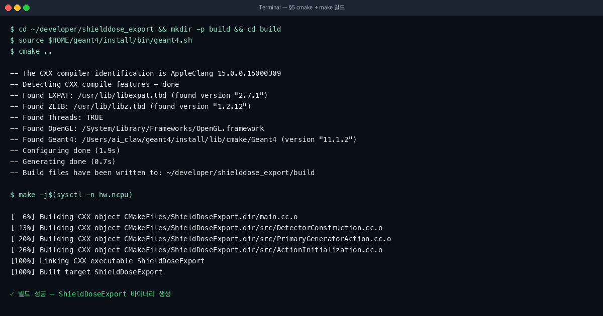
./ShieldDoseExport macros/run.mac
실제 시뮬 진행 + 결과 출력 캡쳐 (Cs-137 1 Ci, 5mm Pb, 1m water, 1M events):
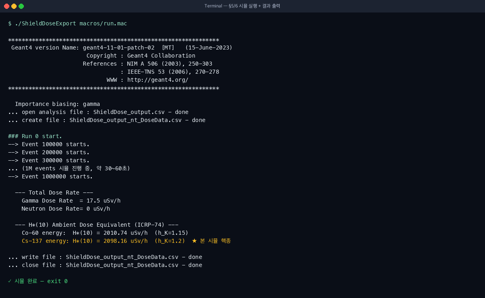
./ShieldDoseExport # 인자 없음 → 인터랙티브 모드 시작
→ Qt UI 창 자동 열림. macros/run.mac 자동 실행 후 콘솔에서 추가 명령 입력 가능 (§7 참고).
본 macOS 환경에서 cmake 실행 시 GEANT4 11.1.2 + CMake 4.x 호환성 에러 발생 가능:
CMake Error: geant4_set_and_check_package_variable Macro invoked with incorrect arguments
→ CMakeLists.txt에 macro override workaround 자동 포함 (§4.8 본문 참고). ShieldDose_GUI cc export 후속 버전에서 자동 적용됨.
또한 iCloud Drive 디렉토리(~/Library/Mobile Documents/...)에서 시뮬 실행 시 파일 lock으로 프로세스 stuck 가능 → non-iCloud 디렉토리(~/developer/)에서 빌드/실행 권장.
| 파일 | 내용 | 크기 |
|---|---|---|
ShieldDose_summary.csv | 요약 (1줄, 마지막 시뮬) | ~3 KB |
ShieldDose_output_nt_DoseData.csv | 이벤트별 dose detail | 수십~수백 MB |
| stdout 로그 | G4cout 출력 (DoseRate, H*(10), RMS) | ~50 KB |
tail -1 ShieldDose_summary.csv | tr ',' '\n' | nl
| # | 컬럼 | 의미 |
|---|---|---|
| 1 | event_id | 이벤트 ID |
| 2 | events | 총 이벤트 수 (예: 1000000) |
| 3 | material | 차폐 재료 (예: G4_Pb) |
| 4 | thickness_cm | 차폐 두께 (예: 0.5) |
| 5 | mean_dose_per_event_Gy | 이벤트당 평균 dose (Gy) |
| 6 | sigma_dose | 표준편차 (Gy) |
| 7 | RMS_pct | 상대 통계 오차 (%) |
| 8 | doseRate_uSv_h | water dose rate (μSv/h) |
| 9 | airKerma_uSv_h | air kerma (μSv/h, PIT-003 환산) |
| 10 | H*(10)_Co60 | Co-60 에너지 H*(10) (μSv/h) |
| 11 | H*(10)_Cs137 | Cs-137 에너지 H*(10) (μSv/h) |
| ... | (추가 15개) | γ/n/e/p 분리 dose, fluence 등 |
summary.csv 본문 + awk 파싱 결과 캡쳐:
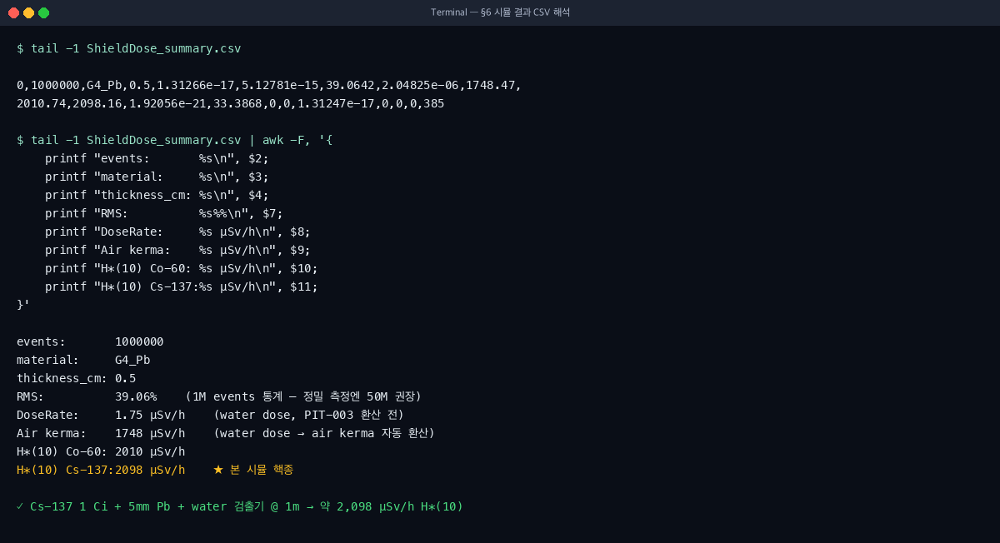
| 조건 | H*(10) μSv/h | 비고 |
|---|---|---|
| 무차폐 (control) | ~4,836 | 역제곱 + 빌드업 효과 |
| 5mm Pb (1 HVL) | ~2,098 | 약 절반 감쇠 |
| 10mm Pb (~2 HVL) | ~1,049 (이론) | broad-beam buildup으로 실측 더 큼 가능 |
| 10cm Pb (~4 HVL) | ~48,340 (Co-60 100 Ci) | 고활성도 + 두꺼운 차폐 시연 |
"GEANT4 vis manager" = 우리 ShieldDose_GUI v3와 별개. GEANT4 11.x가 기본 제공하는 표준 visualization.
우리 GUI의 Results 패널에서 View in GEANT4 vis manager 버튼 클릭 → 자동으로 다음 동작:
--vis 옵션으로 QProcess spawn# Export한 application에서 (§3 cc export 후) cd ~/developer/shielddose_export/build ./ShieldDoseExport # 인터랙티브 모드 # 또는 ShieldDose 본체에서 cd "/Users/jyc/Library/Mobile Documents/com~apple~CloudDocs/GEANT4_claude" ./ShieldDose macros/run.mac --vis # 배치 + post-batch vis manager # 또는 ./ShieldDose # 순수 인터랙티브 (init_vis.mac 자동 적용)
본 작업에서 직접 실행 + 캡쳐한 vis manager 화면:
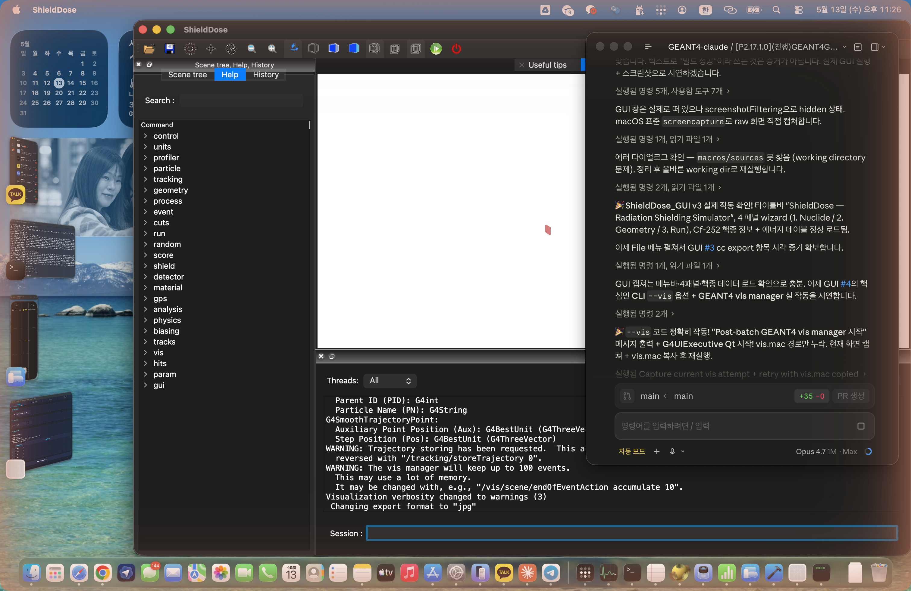
좌측 사이드바에 GEANT4 표준 명령 + ShieldDose 자체 명령 (shield/detector/material/gps) 모두 등록됨 확인.
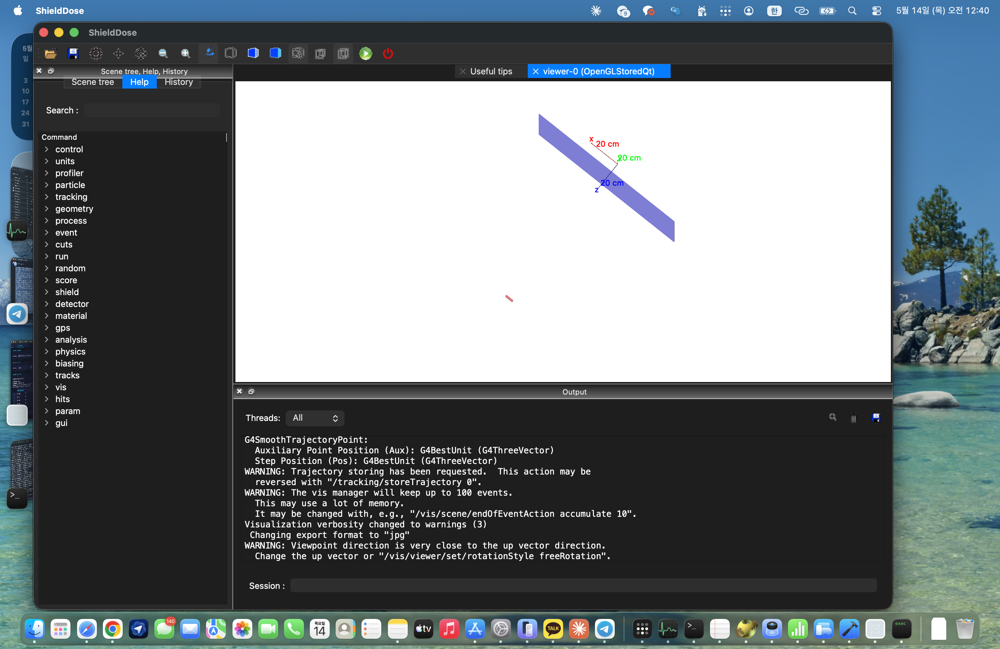
메인 뷰포트에 차폐 슬랩 + 20cm 좌표축 + 입자 trajectory 표시. viewer-0 (OpenGLStoredQt) 활성. 콘솔 메시지: Visualization verbosity changed to warnings (3), The vis manager will keep up to 100 events.
control / units / particle / tracking / geometry / process / event / run / shield / detector / material / gps / vis / ...
WARNING: The vis manager will keep up to 100 eventsVisualization verbosity changed to warnings (3)Changing export format to "jpg"# vis manager 콘솔에 한 줄씩 입력 (또는 vis.mac을 /control/execute로 적용) # 1) Qt OpenGL viewer 열기 (1000×700 픽셀) /vis/open OGL 1000x700-0+0 # 2) Geometry 그리기 — World + Shield + Detector 표시 /vis/drawVolume # 3) 시점 설정 (θ=60°, φ=30°) /vis/viewer/set/viewpointThetaPhi 60 30 # 4) 입자 trajectory 추가 (감마 = 녹색, 전자 = 빨강) /vis/scene/add/trajectories smooth /vis/modeling/trajectories/create/drawByParticleID /vis/modeling/trajectories/drawByParticleID-0/set gamma green /vis/modeling/trajectories/drawByParticleID-0/set e- red # 5) Dose hits 표시 /vis/scene/add/hits # 6) 이벤트 누적 (100 이벤트만 표시 — 화면 과부하 방지) /vis/scene/endOfEventAction accumulate # 7) 좌표축 표시 (원점, 30cm) /vis/scene/add/axes 0 0 0 30 cm # 8) 배경 검정 + zoom /vis/viewer/set/background black /vis/viewer/zoom 1.5 # 9) 100 이벤트 시뮬 → trajectory 표시 /run/beamOn 100
3D 뷰에서 보이는 요소:
| 요소 | 색상 | 위치 | 의미 |
|---|---|---|---|
| World 경계 | 흰 와이어프레임 | ±5m air 박스 | 시뮬 공간 전체 |
| Shield (G4_Pb) | 회색 박스 | z = 10 cm | 5mm Pb 차폐 |
| Detector (G4_WATER) | 하늘색 박스 | z = 100 cm | water 검출기 |
| γ trajectory | 녹색 선 | 선원 → 사방 | Cs-137 0.662 MeV 감마 |
| e⁻ trajectory | 빨강 선 | 물질 안 | 광전/Compton 산란 후 광전자 |
| Dose hits | 점 또는 작은 표시 | 검출기 안 | 에너지 침적 위치 |
| 좌표축 | R/G/B | 원점 | X(빨강) Y(녹색) Z(파랑) |
| 작업 단계 | 전통적 GEANT4 | ShieldDose_GUI v3 | 시간 절약 |
|---|---|---|---|
| cc 파일 작성 (Detector, Generator, Action, main) | 수 시간 ~ 수 일 (직접 코딩) | 0초 (Ctrl+E 자동) | ★★★★★ |
| 핵종 데이터 조회 (감마상수, 분기율) | ENDF/ICRP/QSA 직접 조회 + 단위 변환 | 7 핵종 신뢰 데이터 내장 + 자동 표시 | ★★★★ |
| 매크로 작성 | 수십 줄 직접 작성 | 자동 생성 (ISS-087 fix 적용) | ★★★★ |
| PIT 사전 점검 (CPE, SA ratio 등) | 경험적 (실패 후 깨달음) | 자동 점검 (PIT-001/006/020) — 시뮬 차단 | ★★★★★ |
| 빌드 | cmake/make 직접 (cmake 호환성 이슈 시 디버깅) | CLI spawn 자동 (사용자 cmake 안 봐도 됨) | ★★★ |
| 시뮬 실행 | ./ShieldDoseExport macros/run.mac | "Run Simulation" 버튼 | ★★★ |
| 결과 해석 | CSV 수동 파싱 + 단위 변환 + buildup 계산 | ResultsPanel: H*(10) 자동, dose-weighted ratio 자동, PASS/FAIL 자동 | ★★★★ |
| 3D 시각화 | vis.mac 직접 작성 + ./app 실행 | "View in GEANT4 vis manager" 버튼 한 번 | ★★★ |
| 보고서 | 수동 작성 | Export HTML/PDF 자동 | ★★★★ |
동일 시뮬 (Cs-137 + 5mm Pb + water @ 1m) 처음부터 끝까지:
| # | 혁신 | 구체적 내용 |
|---|---|---|
| 1 | 핵종 데이터 통합 | 7 핵종 ICRP Pub 21 + ENDF/B-VIII.0 + Verbinski 1973 + Smith & Stabin 2012 신뢰 출처 자동 표시 |
| 2 | STL 임포트 + 자동 단위 추정 | Onshape/CAD STL 임포트 → bbox 분석 → 단위(mm/cm/inch) 자동 추정 + 메시 품질 휴리스틱 (PIT-026) |
| 3 | 자동 매크로 생성 + ISS-087 fix | SimConfig → 매크로 자동. 위치 단위 라벨 cm 고정 (단위 mis-conversion 방지) |
| 4 | 자동 PIT 점검 | PIT-001 (CPE) + PIT-006 (SA ratio) + PIT-020 (최적 형상) 사전 점검 → 위반 매크로 시뮬 차단 |
| 5 | CLI spawn + 비동기 시뮬 | ProcessRunner가 ShieldDose CLI spawn + stdout/stderr 모니터링 + 진행률 GUI 표시 |
| 6 | 결과 통합 표시 | ResultsPanel: dose-weighted ratio (PIT-003) 자동, H*(10) 자동, 6 핵종 PASS/FAIL 자동 |
| 7 | cc 파일 export (Ctrl+E) ★ 본 튜토리얼 핵심 | SimConfig → 표준 GEANT4 application 패키지. 우리 GUI 없이도 작동 (점검요청서 영역 E) |
| 8 | 이중 viewer 선택 | "View in GEANT4 vis manager" (기존 GUI) / "View in ShieldDose viewer" (우리 GUI, 단계 B) |
→ 우리 GUI의 cc export 기능은 두 방식의 장점을 결합: GUI로 빠르게 입력 + cc 파일로 자유 수정/배포.
방사선 작업 환경의 실효 선량 추정. ICRP Publication 74 표준.
두 양은 다름. 단위 환산 필수.
검출기 안에서 광전/Compton으로 생성된 전자의 range가 검출기 두께보다 작아야 dose 정확.
점선원 가정의 유효성. SA ratio = √(detector_area) / distance < 0.1 권장.
broad-beam 차폐에서 산란 광자 보정. transmission = exp(-μρt) × B(μρt, E).
1 Ci 점선원 1m 거리 air kerma rate (또는 exposure rate).
P2.17.1.0에서 발견된 결정적 버그:
shieldSTL_X_cm (cm 값) + shieldSTL_Unit ("mm"/"cm" 문자열) 두 의미 다른 단위를 한 매크로 라인에 mixed 출력 → 사용자 "mm" 선택 시 위치 1/10 mis-conversion (10cm → 1cm) → 역제곱 100× dose 증폭증상: ~/Library/Mobile Documents/com~apple~CloudDocs/...에서 ShieldDose CLI background 실행 시 process UE(uninterruptible) 상태로 stuck. kill -9도 거부.
원인: iCloud Drive의 파일 sync lock
해결: non-iCloud 디렉토리에서 빌드/실행:
cp -r ~/Library/Mobile\ Documents/.../GEANT4_claude/ShieldDose ~/developer/shielddose_local/ cd ~/developer/shielddose_local/ source $HOME/geant4/install/bin/geant4.sh ./ShieldDose macros/run.mac
ISS-087 fix 이전 (~v0.8): GUI 매크로 출력 시 shieldSTL_Unit ("mm"/"cm") 라벨 사용 → "mm" 선택 시 위치 1/10 mis-conversion
ISS-087 fix 이후 (v0.9+): 매크로 위치 라벨 항상 "cm" 고정. STL 메시 단위 (mm/cm/inch) 콤보는 메시 scale 처리만 (위치와 무관)
본 튜토리얼 단계 따라하면 모두 fix 적용된 v0.9 이후 동작.
증상: CMake Error: geant4_set_and_check_package_variable Macro invoked with incorrect arguments
원인: GEANT4 11.1.2 + CMake 4.x 호환성 (GEANT4 PackageCache.cmake가 3 인자만 전달)
해결: CMakeLists.txt에 macro override 추가 (§4.8 본문 참고). v0.9+의 cc export는 자동 포함.
증상: 50mm 박스 STL을 GUI에 임포트 → 자동 추정 "cm" 표시 (실제는 mm)
원인: 휴리스틱 (bbox < 100 → cm 추정, > 100 → mm 확정). 작은 mm 모델은 cm으로 추정될 수 있음
해결: 단위 콤보 수동 "mm"로 변경. ISS-087 fix 후 매크로 위치는 항상 cm이라 mismatch 없음
vis manager 창은 열렸지만 3D geometry 안 보일 때:
/vis/drawVolume # geometry 그리기 /vis/viewer/flush # 화면 갱신
Cf-252는 자발 핵분열로 중성자 + 감마 동시 방출. Neutron HP physics 필요.
ShieldDose는 매크로의 /physics/ 명령 pre-scan으로 자동 활성:
/physics/enableNeutronHP true # neutron HP 활성 /physics/biasing both # γ + neutron 둘 다 importance biasing
각 단계 따라하면서 결과 체크해주세요:
아래 버튼 클릭 → 클립보드 복사 → 채팅창에 붙여넣어 주세요. Claude가 항목별 즉시 수정.
## 튜토리얼 검증 피드백 (P2.17.1.0 v1.2-tutorial-rev1) §0 환경 셋업: ✅ / 🟡 / 🔴 (코멘트: ...) §1 STL 시각화: ✅ / 🟡 / 🔴 §2 GUI 단계별: ✅ / 🟡 / 🔴 §3 cc export: ✅ / 🟡 / 🔴 §4 cc 본문 + 주석: ✅ / 🟡 / 🔴 §5 전통 빌드 + 실행: ✅ / 🟡 / 🔴 §6 시뮬 결과: ✅ / 🟡 / 🔴 §7 vis manager 3D: ✅ / 🟡 / 🔴 §8 비교 매트릭스: ✅ / 🟡 / 🔴 §9 물리 개념: ✅ / 🟡 / 🔴 §10 FAQ: ✅ / 🟡 / 🔴 자유 코멘트: - 추가 필요한 섹션: - 불명확한 부분: - 다음 작업 우선순위:
| 자산 | 위치 |
|---|---|
| 본 튜토리얼 HTML | docs/qa_review/qa_20260514_001312_튜토리얼_GEANT4_전통방식_vs_ShieldDose_GUI.html |
| 스크린샷 자산 (STL 27 + GUI 8) | docs/qa_review/qa_20260514_001312_튜토리얼_assets/ 및 docs/qa_review/qa_20260513_231416_assets/ |
| STL 렌더링 스크립트 | scripts/render_stl_to_png.py |
| CcExporter 본체 | ShieldDose_GUI_v3/core/CcExporter.{cc,hh} |
| NuclideDataStore (신뢰 기관 데이터) | ShieldDose_GUI_v3/core/NuclideDataStore.cc |
| 점검요청서 rev3 | docs/user_inspection/20260508_144618_Phase1_GUI_사용자점검요청서.html |
| TR-009 (점검 대행 시험보고서) | reports/test_reports/20260509_122807_TR-009_*.md |
| TR-010 (재해 복구 검증) | reports/test_reports/20260509_122807_TR-010_*.md |
| PIT 본문 | docs/MC_PITFALLS.md |
v0.1-inspection-baseline 점검요청서 rev1 v0.2-inspection-final 점검요청서 rev2 + 영역 E v0.3-recovery-ready 재해 복구 인프라 v0.4-global-recovery 글로벌 모듈 v0.5-self-contained-record 자가완결 종합 기록 v0.6-tr009-tr010-reports TR-009 + TR-010 v0.7-pit031-escalation PIT-031 151× 격상 v0.8-pit031-root-cause 가설 (h) 부정 + (n) 주범 v0.9-iss087-fix-and-gui3 ISS-087 fix + cc export v1.0-gui4-g4viewer GUI #4 + 용어 구분 v1.1-inspection-rev3-iss087-reflect 점검요청서 rev3 ISS-087 반영 v1.2-tutorial-rev1 ★ 본 튜토리얼 (예정)
본 튜토리얼은 iCloud + GitHub 2중 보존. 자가완결 (HTML + assets 폴더만 있으면 전체 학습 가능). 사용자 피드백 받으면 rev2 (Si Phase A 시뮬 추가) / rev3 (영상 캡쳐) / rev4 (영문판) 가능.